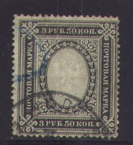
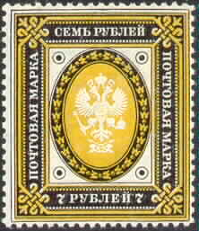
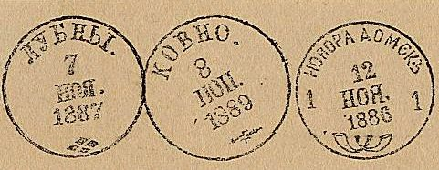
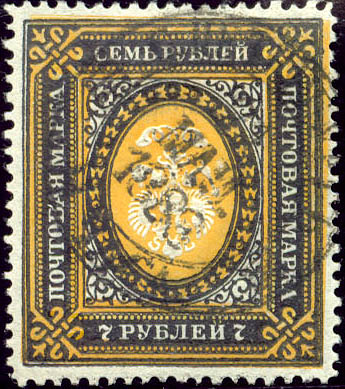

Return To Catalogue - Russia overview - Eagle issues, small sizes
Note: on my website many of the
pictures can not be seen! They are of course present in the
catalogue;
contact me if you want to purchase the catalogue.
Without thunderbolts below the eagle in the posthorns


(Zoom-in of the posthorn part: no thunderbolts)
3 R 50 black and grey 7 R black and yellow
Value of the stamps |
|||
vc = very common c = common * = not so common ** = uncommon |
*** = very uncommon R = rare RR = very rare RRR = extremely rare |
||
| Value | Unused | Used | Remarks |
| Watermark 'Wavy lines', perforated 13 1/2 (1884) | |||
| 3 R 50 | RR | RR | Horizontally or vertically laid paper |
| 7 R | RR | RR | Vertically laid paper only |
With thunderbolts below the eagle (the thunderbolts represent telegraphic usage)
(Reduced size)

1 Ruble, perforated 11 1/2.
Perforated 1 R brown and orange (1889) 3 R 50 k black and grey (1889) 3 R 50 k brown and green (1917) 5 R blue and green (1906) 7 R black and yellow (1889) 7 R green and red (1917) 10 R red, yellow and grey (1906)
Value of the stamps |
|||
vc = very common c = common * = not so common ** = uncommon |
*** = very uncommon R = rare RR = very rare RRR = extremely rare |
||
| Value | Unused | Used | Remarks |
| 1 R | ** | c | Perforated 13 1/2 or 11 1/2 (***) Watermark wavy lines Horizontally or vertically laid paper |
| 1 R | c | c | Perforated 13 1/2 or 12 1/2 (*), on paper with varnished 'Lozenges' pattern on the front (1909) |
| 3 R 50 black and grey | * | * | Perforated 13 1/2 Horizontally or vertically laid paper |
| 3 R 50 brown and green | c | c | Perforated 13 1/2 or 12 1/2 |
| 5 R | *** | * | Perforated 13 1/2 or 11 1/2 (RR) |
| 7 R black and yellow | * | * | Perforated 13 1/2 Vertically laid paper only |
| 7 R green and red | * | * | Two types: single or double outer line Perforated 13 1/2 or 12 1/2. |
| 10 R | *** | * | Perforated 13 1/2 |

The stamps 1 R, 3 R 50 k black and grey and 7 R black and yellow with small circles added in the design were issued for Finland (see picture above).
Imperforate (with thunderbolts, 1915)


1 R brown and orange 3 R 50 k brown and green 5 R blue and green 7 R green and red 10 R red, yellow and grey
Value of the stamps |
|||
vc = very common c = common * = not so common ** = uncommon |
*** = very uncommon R = rare RR = very rare RRR = extremely rare |
||
| Value | Unused | Used | Remarks |
| 1 R | c | vc | I've seen misplaced and inverted central parts also misplaced background patterns |
| 3 R 50 | c | * | |
| 5 R | c | c | |
| 7 R | * | * | |
| 10 R | *** | *** | |
The watermark as seen on part of a sheet of 1 R stamps
Errors, inverted centers:


Inverted centers
Forgeries: Fournier has made forgeries of the 3R50 and 7R without thunderbolt stamps. They are quite deceptive. He offers them for 4 Swiss Francs (both values) in his 1914 pricelist as first choice forgeries. Luckily, the cancels are always the same (even the date), this seems an easy way to detect these forgeries. Examples of Fournier forgeries:


(Fournier forgeries, reduced sizes)
(Reduced sizes)

Above, some of the cancels used by Fournier are
shown. The following cancels seem to exist:
St.Petersburg 21 May 1888
St.Petersburg 12 June 1889
Noworadomsk 12 June 1886
Kovno 8 June 1886
Lubni 7 November 1887
Moscow 14 December 1888
Riga 1 June 1888

According to 'The forged Stamps of all Countries' by J.Dorn two plates were used to make these forgeries. Some distinguishing characteristics:
Senf made a forgery of the imperforate 1 R value. This forgery was distributed with stamp journal the 'Illustrierten Briefmarken Journal', No 13 (6 July 1889, thus long before the imperforate stamps of 1915 were issued) as an 'art supplement' or 'Kunstbeigabe':


Senf forgery of the 1 R, I've been told that the 7 R is also a
Senf forgery.
The thunderbolt stamps have sometimes been overpainted to pretend to be stamps without thunderbolts. However, they can be detected by the fact that the posthorns are smaller in the stamps with thunderbolt (sorry, no picture of such a forgery yet).
Postal forgery of the 3R50 value, used in Warsaw (also known to
have been used in Litzmannstadt). This forgery was printed on
margins of sheets of the 1 R value (on the left part of the left
forgery, a genuine 1 R can still be seen); therefore the left,
upper and lower perforation are genuine, the right perforation
was added (the perforation is not straight in the right forgery).
Only about 20 of such forgeries are known (left stamp reduced
size)

Another postal forgery, is this the same as the above one?
According to the 'Russian post in the Empire, Turkey, China and the post in the kingdom of Poland' by S.V.Prigara postal forgeries of the perforated 3R50 exist (thunderbolts issue), some with a Lodz cancel (see image above).
The following large stamp was issued in 1863 to be used in the Russian post offices in the Turkish empire:


{kind=link}
{kind=link}